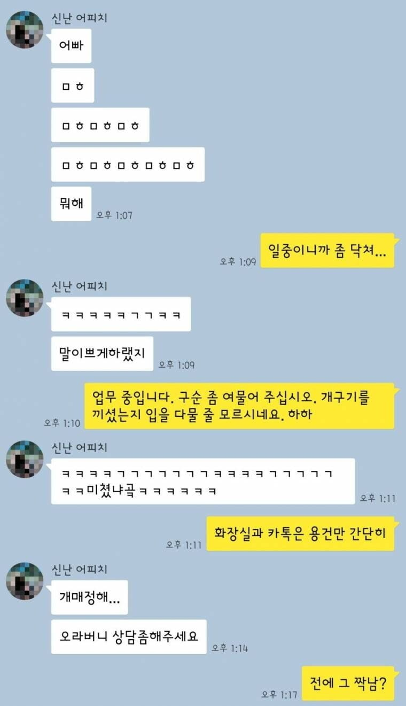
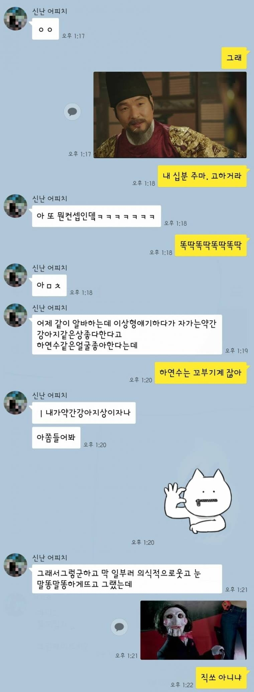
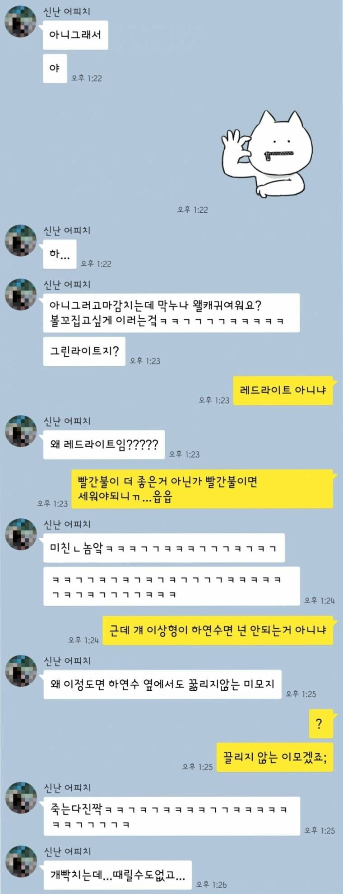
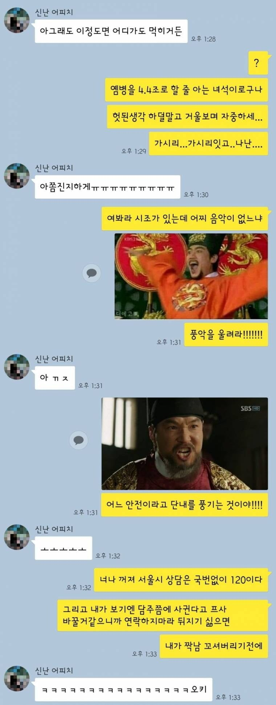
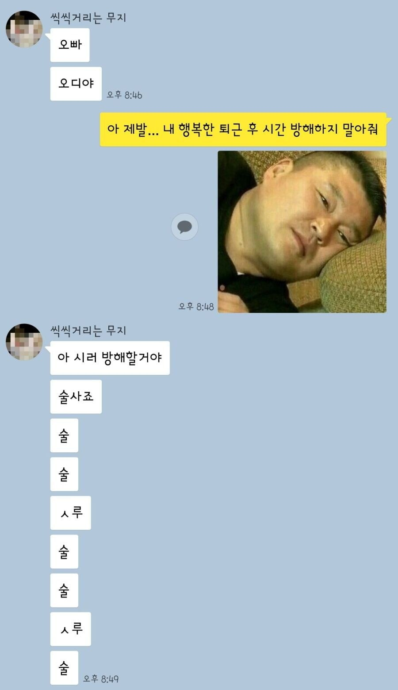
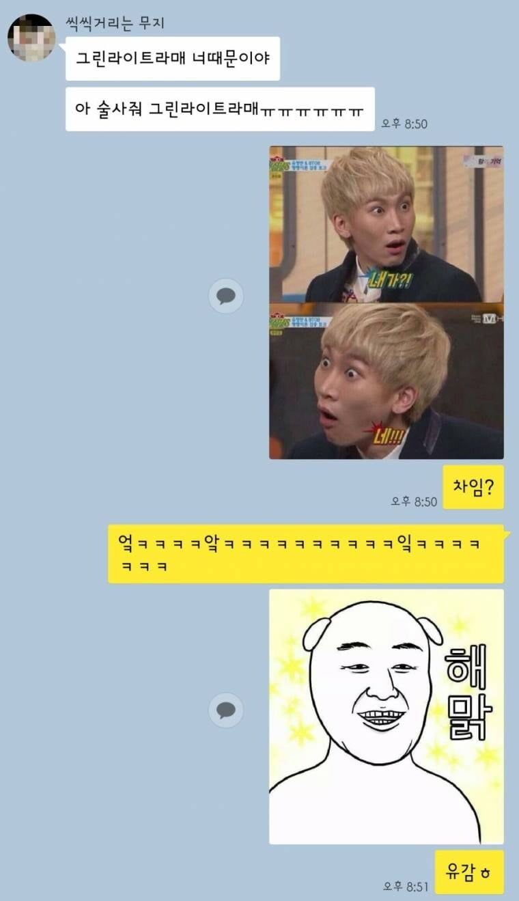
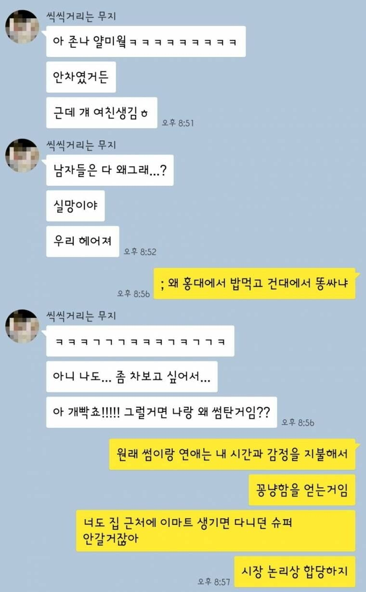
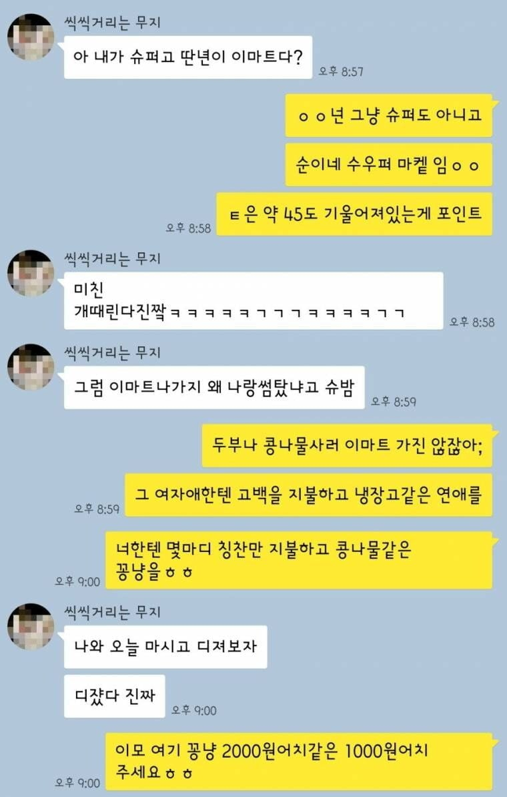
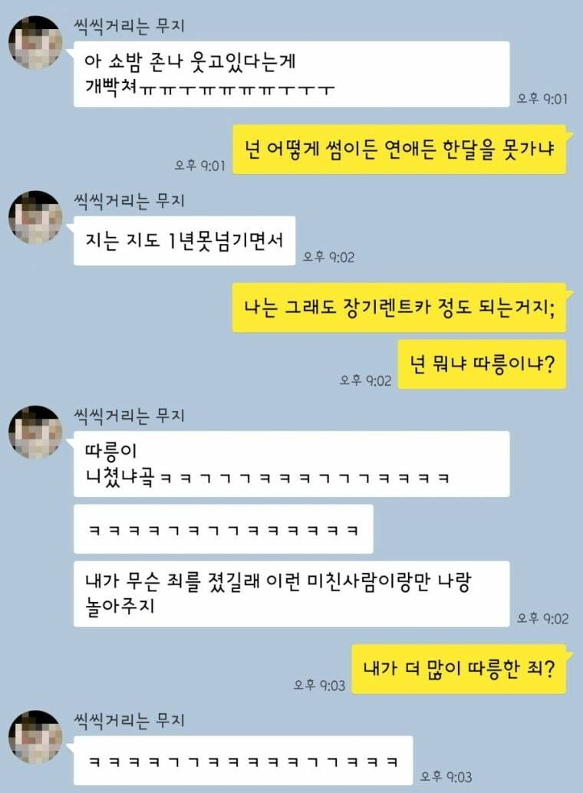

남자가 외모 안되면 말빨로 아가리 조지는것도 능력이지
혓바닥 드리블 현란허네 ㅋㅋ
나만 저런 말투 별론가
가족이자나
힘들게 짤까지 찾아가며 답장 주는거 보니 절대 친오빠 아님ㅋㅋㅋㅋㅋㅋㅋㅋ
세상이 몰카하나... 쉰내 나는데 특히 짤하나올리고 사극연기하는게 너무 힘든데
원래 젊은 남녀가 상호간에 적당히 호감 잘 지내면 똥유머 때려도 하하호호 하고 그렇지
둘다 성격은 좋아보임
누가봐도 친한 오빠동생인데 다들 왤케 싸워
다들 형제자매랑 사이 안 좋은가 봄. 저 정도 드립은 치면서 놀지 않나
남매끼리 야한 얘기는 잘 안할 것 같긴한데 나는 일단 친남매 보단 친한 오빠동생 같아 보이긴함 나도 비슷한 친구들 있고
이상하네 옛날에 봤을 땐 웃겼는데 이제보니 웃대감성 나는게 ㅈㄴ 틀니냄새나네
우리가 이젠 너무 늙은거겠지.
여고생들은 굴러가는 낙엽잎에도 꺄르르 한다는 옛말있잖냐. 우리가 저런거에 지금도 꺄르르하면 약먹을 시간 지난거지
존나 오글거리네... 주작 아니면 웃대랑 오유 분위기 너무 심하다
저거 웃대 벤티같은톨좀 이라고 원래 말 잘하는 유명한 사람임 웃대 감성이랑 개붕이들이랑은 원래 안 맞아서 볼때는 좀 힘들 듯
말투가 에휴...
남자가 말투가 저런다고?
이런 오빠가 있는데 여간남자는 눈에 잘 안들어올거같은데 ㅋㅋㅋ
풍둔아가리술 마스터네 ㅋㅋㅋㅋ